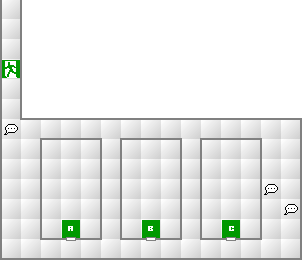
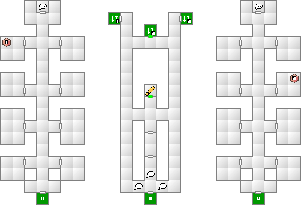
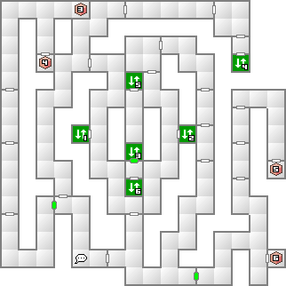
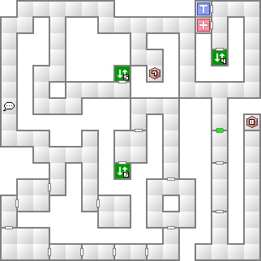

妖精ピクシーや地霊ノッカーは、さすがにここから先は実用に耐えないので、合体で夜魔モコイにするか、仲魔が増えるまで召還しないほうがいいだろう。基本的に能力的に使えなくなった悪魔でも材料として扱うことで無駄にはならない。合体次第では強力な悪魔を作ることができるので、うまく活用しよう。
まずは第一・第三倉庫の奥にいる作業員から扉のコードと防寒服を入手する。防寒服は氷結相性のダメージを10分の1にする防具だ。このダンジョン中はずっと装備していても構わない。
第二倉庫のボスのところまでは直通エレベーターが使えないので遠回りする必要がある。1階西側のエレベーターで地下へ降り、そのまま道なりに北へ向かえばさらに下へ降りることができるエレベーターがある。
地下2階では、エレベーターを降りた直後から右側の壁伝いに歩いていればいずれ最下層へのエレベーターまで辿り着けるだろう。
ここからは友好的な悪魔が多数登場するので会話のバリエーションが広がっていく。基本的にどの会話でも友好度やスタンスが上昇する選択肢を選んでいけば自然と仲魔になる。例え失敗したとしても上昇した友好度やスタンスは引き継がれるので、お金やアイテムを貢いで無駄になったなどと思わないように。
ここでの友好的な選択肢の一部を挙げると
などといった選択肢が好意を持たれる。実際に何度も選んで会話のコツを掴んでいこう。
妖鬼アズミは氷結を無効化するので、もし仲魔にしていないなら、妖精ピクシー＋魔獣ギャリートロットで作成するか、B2F以降に出現するので会話で仲魔にしよう。ついでに夜魔モコイも会話で仲魔にしておくといいだろう。こちらも氷結無効である。
ストックに余裕があるなら、ここで遭遇するペナンガルを仲魔にして、妖鬼アズミと合体させて堕天使セエレを造ろう。セエレはここで有効なアギと、防御力を低下させるラク・ンダを所持している。ちなみに堕天使セエレは業魔殿で作成するとラク・カジャも継承するので、こちらも欲しい人は一旦戻るかクリア後に作成しよう。
| 能力 | LV16 HP408 MP60 力03 知05 魔06 耐08 速05 運06 |
|---|---|
| 特技 | マハ・ブフ アイオンの雨 体当たり |
| 火炎 | 氷結 | 電撃 | 衝撃 | 破魔 | 呪殺 | 万能 |
|---|---|---|---|---|---|---|
| 精神 | 神経 | 魔力 | 打撃 | 斬撃 | 技 | 銃撃 |
| 150 | 吸100 | 100 | 100 | 無効 | 無効 | 100 |
| 無効 | 無効 | 無効 | 100 | 100 | 100 | 100 |
防寒服で二人を固めて、氷結無効悪魔を配置し、弱点である火炎相性の攻撃を行っていれば余裕で倒すことが出来る。多少通常攻撃が怖いくらいだ。ラク・カジャがあるなら負けようもないだろう。
ガルガンゼロを倒すと倉庫内の冷気が収まり、今まで通過できなかった扉が開いているようになる。中にはパラメーターを上昇させる貴重な香が入った宝箱へ通じている扉もあるので取得しておきたい。
入手したドリーカドモンを使用して、以後造魔と呼ばれる悪魔を造ることができるようになる。詳しくは造魔のページを参照して欲しい。使い方次第では非常に強力な仲魔となるので是非使いこなそう。


緑の扉はボス撃破後に通行可能。

緑の扉はボス撃破後に通行可能。

緑の扉はボス撃破後に通行可能。
| 妖精ピクシー(2) | 魔獣ギャリートロット(6) | 地霊ノッカー(3) |
| 妖獣ヘルハウンド(7) | 屍鬼ドラッグクイーン(4) | 怪異かみおとこ(4) |
| 幽鬼ガキ(3) | 悪霊ポルターガイスト(2) |
| 妖精ペナンガル(7) | 魔獣ギャリートロット(6) | 夜魔モコイ(7) |
| 凶鳥オンモラキ(8) | 邪鬼グレムリン(5) | 屍鬼ドラッグクイーン(4) |
| 怪異かみおとこ(4) |
| 妖鳥ハーピー(9) | 妖精ペナンガル(7) | 夜魔モコイ(7) |
| 妖鬼アズミ(8) | 凶鳥オンモラキ(8) | 妖樹ジュボッコ(10) |
| 邪鬼グレムリン(5) | 屍鬼ドラッグクイーン(4) |
とにかく氷結相性の攻撃を仕掛けてくる悪魔が多いので防寒服は必須となる。